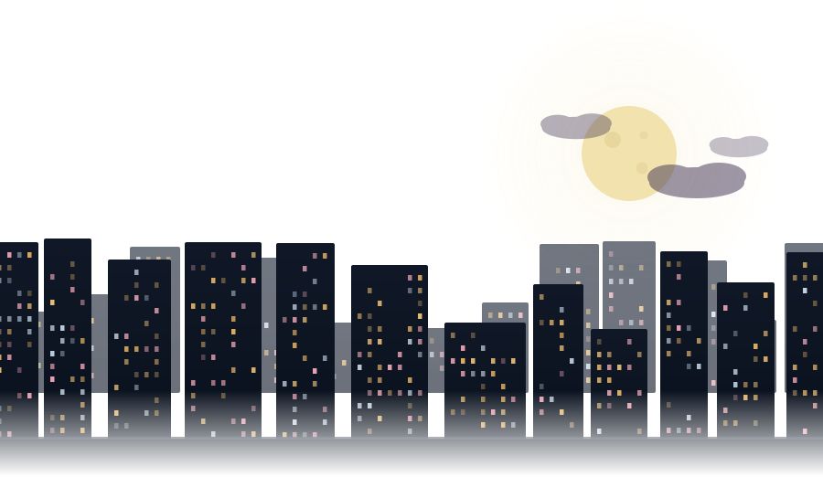

IMAGE
View, browse & organize photos
- Arrow-key folder browsing
- Zoom, pan, rotate, fullscreen
- EXIF orientation & info bar
- Animated GIF · trash delete
KING OF THE UTILITIES
… ALL YOU MUST INSTALL WINDOWS SOFTWARE
IN 1 NO BLOAT PACKAGE.
v0.159.0 · For Windows 10 / 11 (64-bit) · Free & open source

Double-click any file and the right module opens in the same window. No app switching, no installer roulette, no toolbars.
View, browse & organize photos
Play anything, no codec packs
Music without the media library
Read PDFs, edit plain text
Compress, extract & peek inside
Know what's inside your PC
KOTU isn't a bundle of other people's installers. It's a single app that takes over the jobs you used to install a separate program for.
IrfanView · XnView MP · FastStone · PhotoScape
VLC · PotPlayer · foobar2000 · codec packs
WinRAR · Bandizip · PeaZip · 7-Zip shell
Acrobat Reader · Sumatra · Notepad++ · CPU-Z
Every one of them ships inside the download — nothing is fetched at runtime.
The shell stays put — only the centre view and the bottom bar change to match what you opened.
IMAGE MODULEScreenshot coming with the 1.0 release
VIDEO MODULEScreenshot coming with the 1.0 release
ARCHIVE MODULEScreenshot coming with the 1.0 release
HARDWARE MODULEScreenshot coming with the 1.0 release
7z.dll, libvlc, the sensor library — ships inside the download. The only thing that touches the network is the optional update check.KOTU-win-Portable.zip. Unzip it anywhere, including a USB stick, and run it. It updates itself the same way the installed build does.Windows 10 / 11 · 64-bit · v0.159.0
KOTU-win-Setup.exe
KOTU-win-Portable.zip
Both builds include every engine and work straight away. The other files on the release page (.nupkg and friends) are used by the updater — you don't need them.